13. 設定ダイアログ
エディタの画面下の 設定... で、タブ形式の設定ダイアログが開きます。
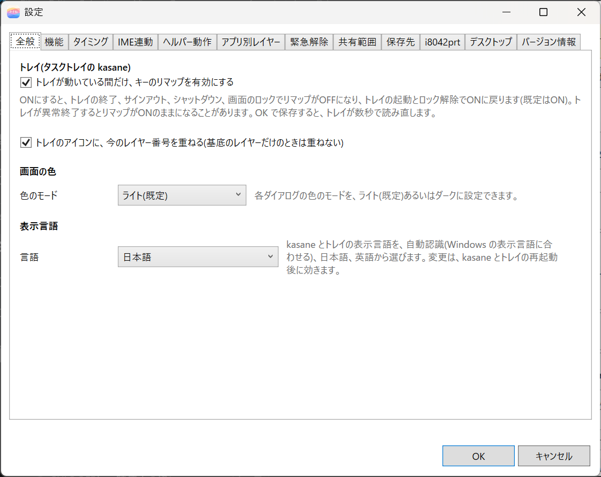
| タブ | 内容 | 説明している章 |
|---|---|---|
| 全般 | トレイとの連動、レイヤー番号の表示、色のモード、表示言語 | この章 |
| 機能 | マクロ、コンボ、タップダンス、キー置換の ON と OFF | この章 |
| タイミング | 長押し、同時押し、連続タップの判定時間 | この章 |
| IME 連動 | IME に合わせたレイヤーの切り替え、NICOLA | 10. IME 連動とNICOLA |
| ヘルパー動作 | キーでプログラムの起動などを動かす | 11. ヘルパー動作とアプリ別レイヤー |
| アプリ別レイヤー | 前面のアプリに合わせたレイヤーの切り替え | 11. ヘルパー動作とアプリ別レイヤー |
| 緊急解除 | 緊急解除の組み合わせ | 7. 緊急解除 |
| 共有範囲 | ドライバが保存する設定の単位 | この章 |
| 保存先 | 設定フォルダ、取り込み前の設定に戻す | この章 |
| i8042prt | PS/2 キーボードのレイアウト | この章 |
| デスクトップ | デスクトップのアイコンの表示方法 | この章 |
| バージョン情報 | バージョンとビルド日時 | この章 |
下の OK と キャンセル で閉じます。タブごとに、設定が反映されるタイミングが違います。
| タブ | 反映されるとき |
|---|---|
| 全般、デスクトップ | OK で保存する。トレイが数秒で読み直す |
| 機能、タイミング、IME 連動の NICOLA の配列 | OK のあと、エディタで キーボードに適用(ON) を押したとき |
| ヘルパー動作、アプリ別レイヤー | OK で保存する。トレイが数秒で読み直す |
| 緊急解除 | 別のタブに移るとき、または OK を押したとき（管理者として起動しているときだけ） |
| 共有範囲 | タブの中のボタンを押したとき（OK や キャンセル とは関係しない） |
| i8042prt | タブの中の 保存する を押したとき（OK や キャンセル とは関係しない） |
全般
トレイ
- トレイが動いている間だけリマップする: ON にすると、トレイの終了、サインアウト、シャットダウン、画面のロックでリマップが OFF になり、トレイの起動とロック解除で ON に戻ります（既定は ON）。詳しくは、4. トレイを見てください。
- トレイのアイコンにレイヤー番号を出す: アイコンの右下に、今のレイヤーの番号が出ます。基底のレイヤーだけのときは、出ません。アイコンの大半が隠れるので、出したくないときはチェックを外します。
画面の色
色のモード で、ライト（既定）と ダーク を選べます。OK で保存すると、開いている画面も、これから開く画面も、メイン画面、設定、各編集画面、キーの割り当てなど、すべてに効きます。タイトルバーも暗くなります。
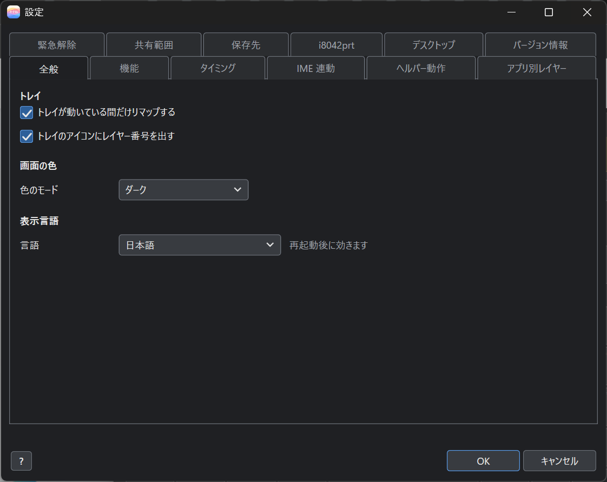
- トレイ（右クリックのメニューとバージョン情報）と、License Manager にも効きます。トレイは、メニューやダイアログを開くたびに読みます。License Manager は、起動のたびに読みます。設定を変えたあと、次に開いたときから変わります。すでに開いている License Manager は、開き直してください。
- Windows の設定のモードには、合わせていません。ここで選んだものが優先されます。
- Windows が出す確認の画面（メッセージ、ファイルを選ぶ画面）の色は、変わりません。
表示言語
言語 で、kasane とトレイの表示言語を、自動認識(既定)、日本語、English から選びます。自動認識は、Windows の表示言語に合わせます。変更は、kasane とトレイの再起動後に効きます。保存すると、kasane の再起動を勧める確認が出ます。トレイは、数秒後に自動で再起動します。
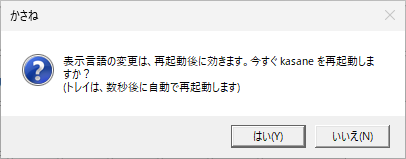
機能
マクロ、コンボ、タップダンス、キー置換を、使わなければ OFF にできます。画面には、キーボードの現在の値（「マクロ ON / コンボ ON / …」）も出ます。
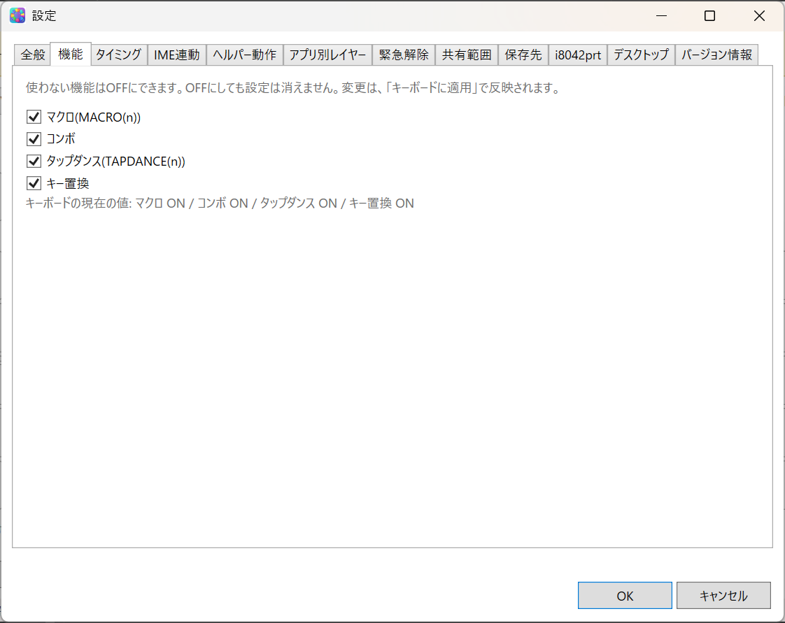
- OFF にした機能のキーは、何もしません。コンボの構成キーは、普通のキーとして動きます。
- OFF にしても、中身（マクロの定義など）は消えません。
- レイヤーとキーの置き換え、Mod-Tap と Layer-Tap、修飾キー付きのキーは、OFF にできません。常に使えます。
- チェックに一度も触れていなければ、適用してもキーボードの設定は変わりません。コマンド版（
--set-features）で変えた値が、そのまま残ります。
タイミング
長押し、同時押し、連続タップの判定時間などを変えます。
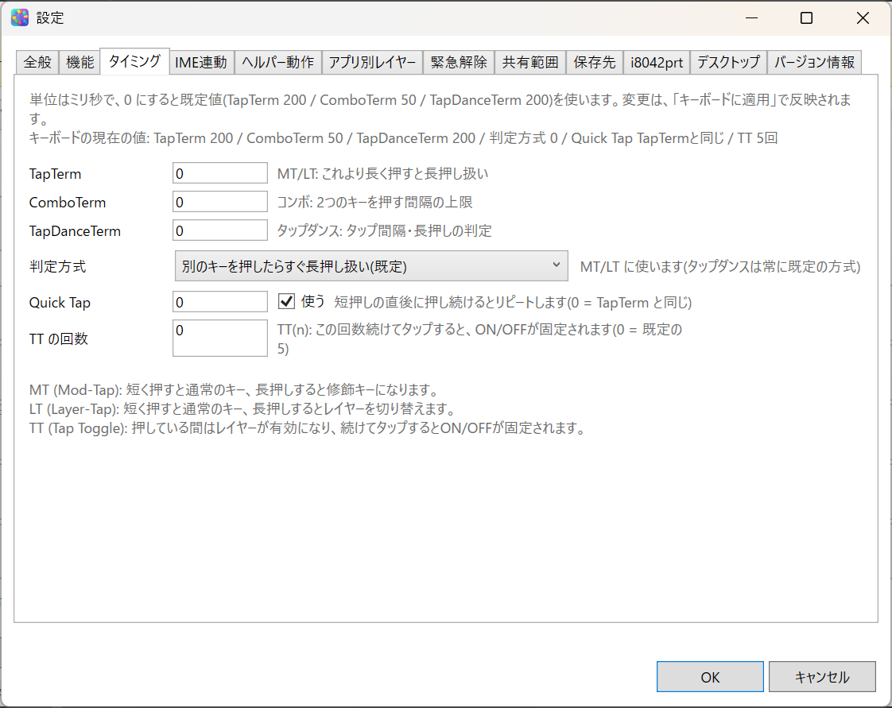
| 項目 | 内容 |
|---|---|
| TapTerm | Mod-Tap と Layer-Tap で、これより長く押すと長押し扱いになる時間（既定 200） |
| ComboTerm | コンボで、2 つのキーを押す間隔の上限（既定 50） |
| TapDanceTerm | タップダンスの、タップの間隔と長押しの判定の時間（既定 200） |
| 判定方式 | Mod-Tap と Layer-Tap の判定の方法。別のキーを押したら長押し（既定）、別のキーを押して離したら長押し、時間内に離せば短押し の 3 通り。タップダンスは、常に既定の方式 |
| Quick Tap | 短押しの直後に押し続けると、リピートする機能。使う で ON と OFF を切り替える。時間は 0 だと TapTerm と同じ |
| TT の回数 | TT(n) を固定するのに必要なタップの回数（0 は既定の 5 回） |
単位はミリ秒で、0〜10000 の整数で入れます。0 にすると、既定値を使います。画面の上には、「キーボードの現在の値」も出ます。速く打つと Mod-Tap が意図せず長押し扱いになるときは、2 つ目か 3 つ目の判定方式を試してください。
共有範囲
キーボードは、接続先（USB ポートなど）ごとに、別のキーボードとして扱われます。エディタで作った設定（project.json）と、トレイの設定は、ポートを替えると引き継がれません（エクスポートとインポートで移せます）。
共有範囲は、ドライバが保存する設定の単位です。
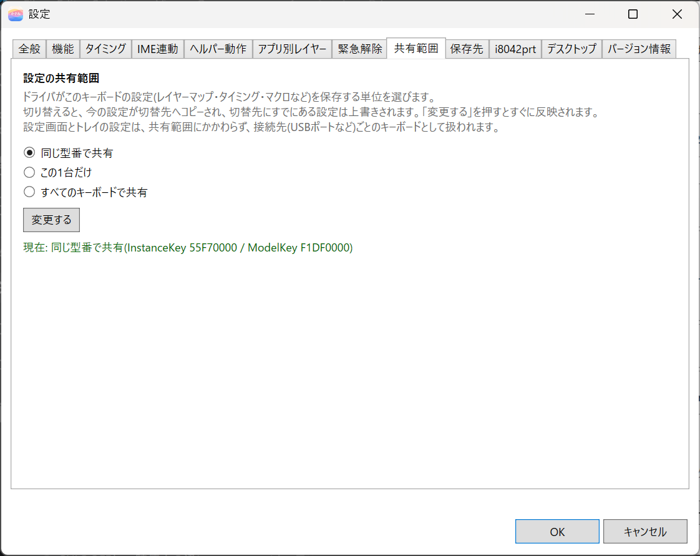
管理者でないときは、閲覧専用モードのため、変更する が押せません。
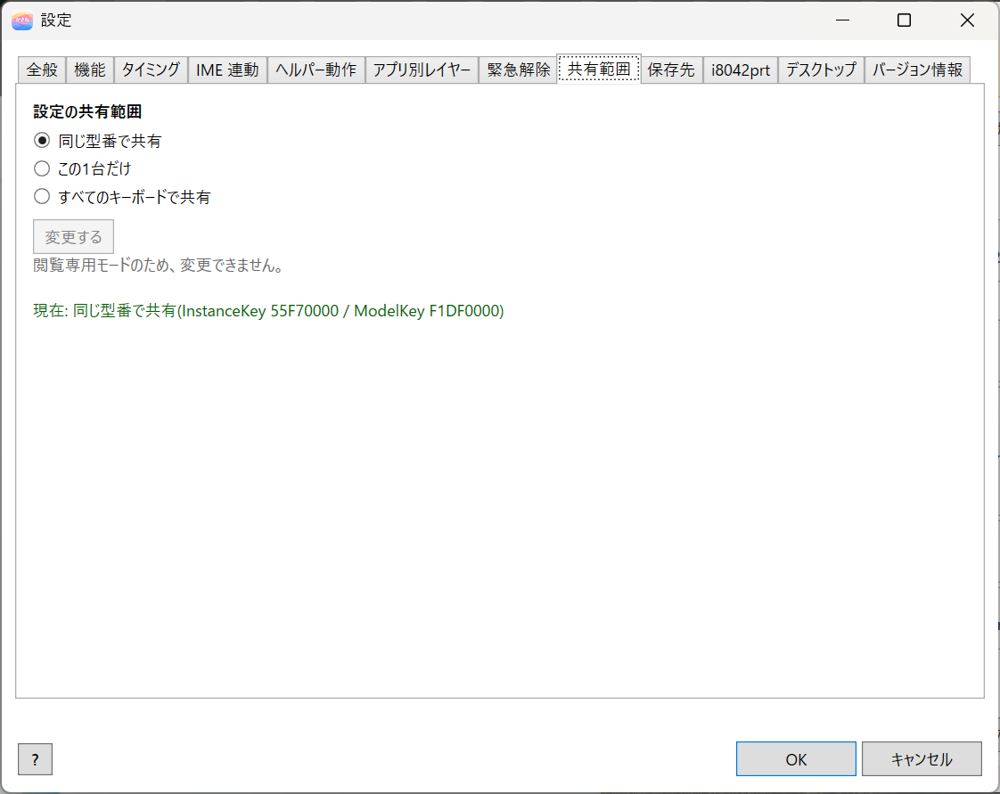
| 選択 | 内容 |
|---|---|
| 同じ型番のキーボードで共有（既定） | 同じ型番なら、ポートを変えても、同じ設定を使う |
| この 1 台だけ | この差し込み口のキーボードだけの設定にする |
| すべてのキーボードで共有 | すべてのキーボードで、1 つの設定を使う |
選んで、変更する を押すと反映されます。画面の下に、現在の範囲と、キーボードの識別子（InstanceKey、ModelKey）が出ます。閲覧専用モードのときは、変更できません。
画面に出る 2 つの識別子は、8 桁の 16 進数で、キーボードの情報から次のように作られます。
| 識別子 | 計算の元 | 性質 |
|---|---|---|
| InstanceKey | デバイスのインスタンス ID（接続位置を含む） | 1 台ごとに違い、USB ポートを変えると変わります。DeviceId、UniqId と同じ値で、設定フォルダの中の <UniqId> フォルダの名前になります |
| ModelKey | ハードウェア ID の先頭の 1 件 | 同じ型番なら同じ値で、ポートを変えても変わりません。改訂番号（REV_xxxx）が違うと、別の型番として扱われます |
どちらも 16 ビットの計算結果から作る値なので、別のキーボードと一致することがまれにあります。
- 「すべてのキーボードで共有」は、配列の違うキーボード（JIS とテンキーなど）を混ぜると、意図しない割り当てになります。接続中に型番の違うキーボードがあると、確認が出ます。
- 切り替えるときは、今の設定が切り替え先へコピーされ、切り替え先の既存の設定は上書きされます。たとえば、「すべて」や「この 1 台」から「同じ型番」へ戻すと、同じ型番で共有している設定が置き換わります。
- 同じ型番の別のキーボードへの反映は、そのキーボードを接続し直す（またはパソコンを再起動する）まで行われません。
保存先
設定ファイル（キーボードごとの設定、トレイの設定、ログ）を保存しているフォルダと、環境変数 KASANE の値を表示します。
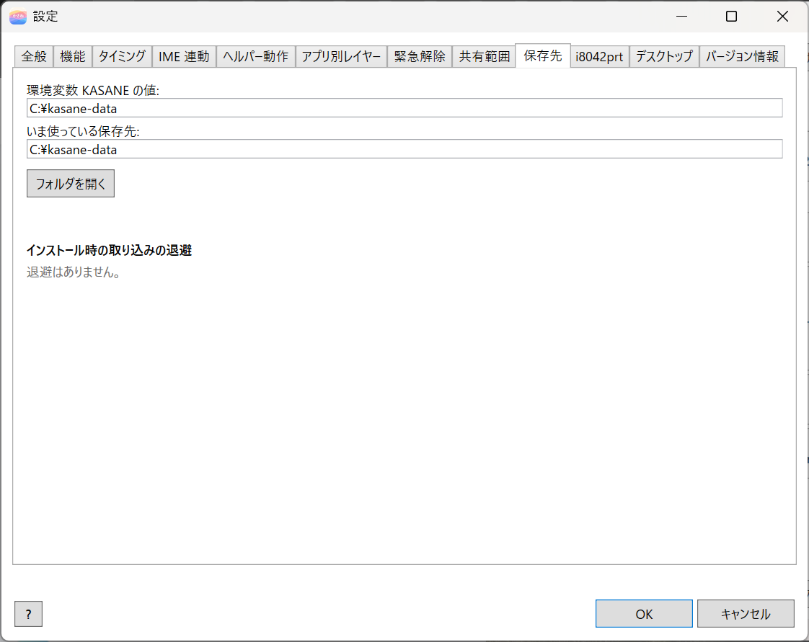
KASANEに絶対パスが設定されていれば、そのフォルダを使います。なければ、%LOCALAPPDATA%\applet\kasaneを使います。- 値の変更は、インストーラーの「設定フォルダの指定」で行います（1. インストール）。変更後は、必要に応じて、再起動、またはサインアウトとサインインをしてください。
- フォルダを開く で、エクスプローラーで開けます。
取り込み前の設定に戻す
インストール時の設定ファイルの取り込みで置き換わった型番は、このタブの下部に一覧で出ます。取り込み前の設定に戻す は、退避した設定と、今の設定を入れ替えます。もう一度押すと、元に戻ります。
ドライバのレジストリを書くので、管理者として再起動 したときだけ押せます。反映は、キーボードを接続し直したあと（またはパソコンの再起動後）です。
i8042prt
PS/2（ACPI）キーボードのレイアウトは、レジストリ HKEY_LOCAL_MACHINE\SYSTEM\CurrentControlSet\Services\i8042prt\Parameters の値でしか指定できません。HID キーボードでは、これらの値が残っていると、個別の指定が無効になります。
この設定は、ノート PC の内蔵キーボードが PS/2（ACPI）キーボードで、外部キーボードも併用するときに使います。内蔵キーボードと外部キーボードで、異なるキーボードレイアウトを使いたい場合です。有効にすると、PC の起動時に PS/2（ACPI）キーボードを認識するタイミングで、指定のレイアウトにします。Windows の「言語と地域」のオプションで、キーボードのレイアウトを「接続されているキーボード」にしても、PS/2（ACPI）キーボードのレイアウトが JIS にならないときに、試してください。
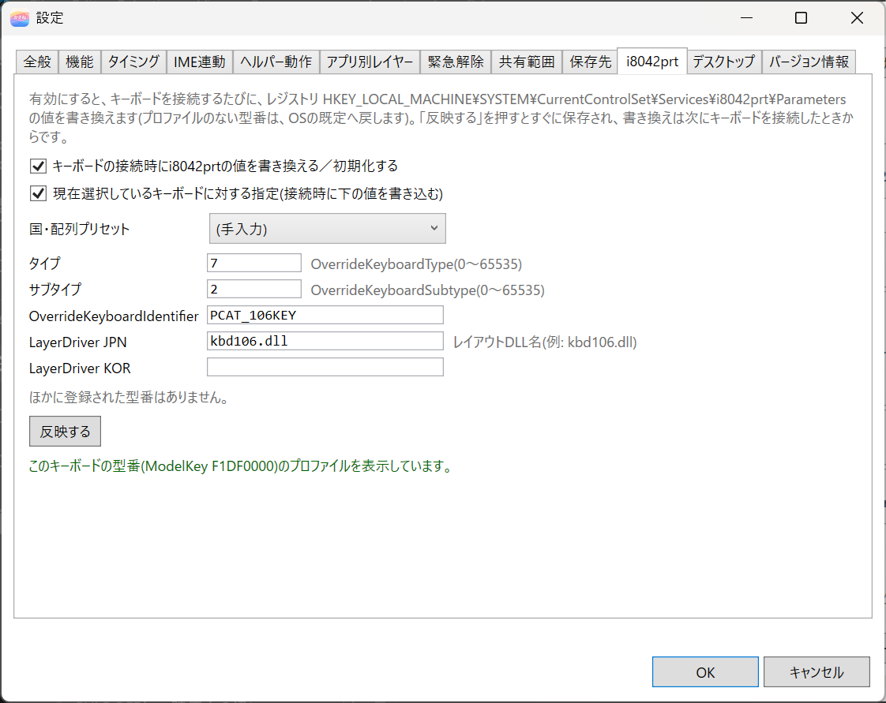
管理者でないときは、入力欄と 保存する が押せません。
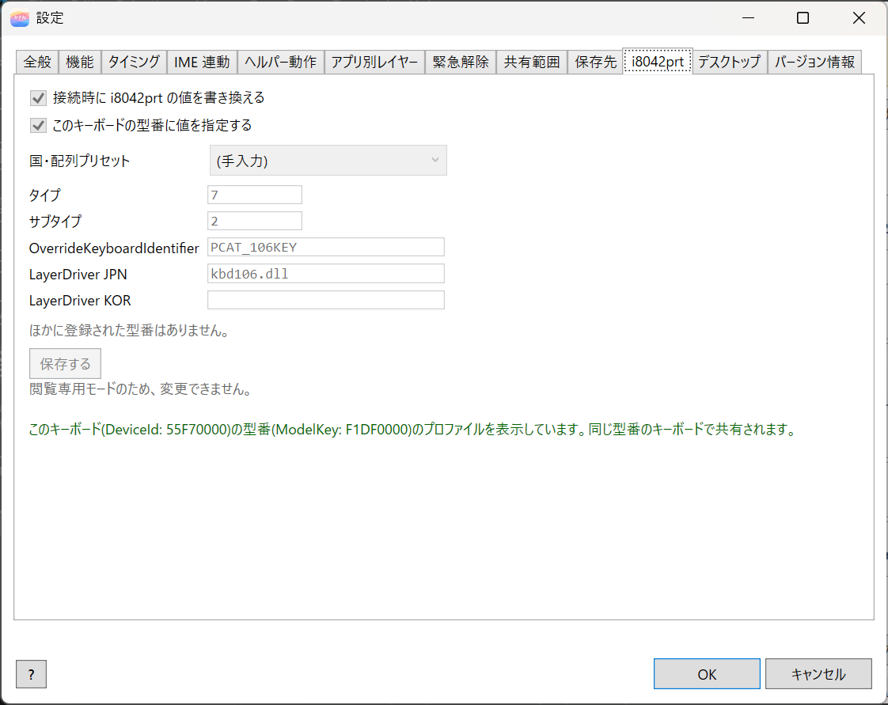
接続時に、i8042prtの値を初期化する を有効にすると、キーボードを接続するたびに（起動時を含みます）、次のように書き換えます。
- プロファイルのある型番には、設定した値を書き込みます（空欄の値は削除します）。
- プロファイルのない型番には、
OverrideKeyboardType、OverrideKeyboardSubtype、OverrideKeyboardIdentifierとLayerDriver JPN、LayerDriver KORを削除して、OS の既定に戻します。
無効（既定）のときは、何もしません。このキーボードでは以下の設定とする にチェックを付けると、選んでいるキーボードの型番のプロファイルとして、下の値が使われます。国・配列プリセット から選ぶか、タイプ、サブタイプ、OverrideKeyboardIdentifier、LayerDriver JPN、LayerDriver KOR（レイアウト DLL 名。例: kbd106.dll）を、手で入れます。ほかに登録された型番があるときは、一覧に出ます。無効の間はプロファイルを設定できませんが、保存済みの内容は残り、有効にしたときに使われます。ドライバ全体の設定で、保存する を押すとすぐに保存されます。書き換えは、次にキーボードを接続したとき（再接続、または再起動）から行われます。
画面の上部には、選んでいるキーボードの DeviceId と、型番を表す ModelKey が出ます。プロファイルは ModelKey ごとに保存されるので、同じ型番のキーボードで共有されます。2 つの識別子については、前の「共有範囲」の節を参照してください。
デスクトップ
デスクトップのアイコンの表示方法（通常表示、詳細表示、小さなアイコン表示、リスト表示、タイル表示）を変えます。キーのリマップとは関係がなく、のどかの設定にあった機能を引き継いだものです。
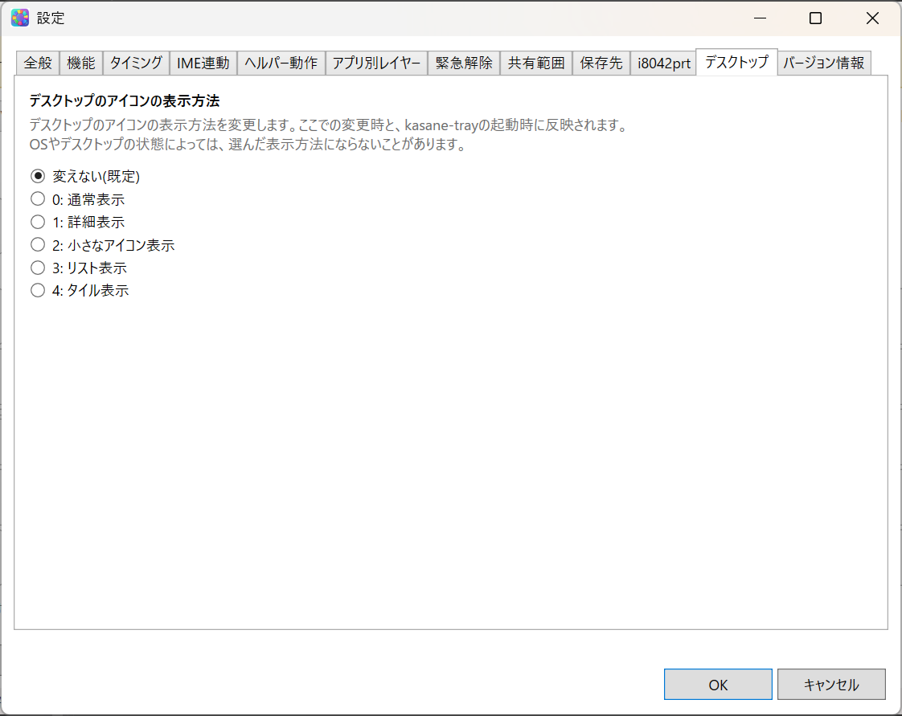
変えない(既定) のままなら、何もしません。選んだ表示方法は、OK で保存したときと、トレイの起動時に反映されます。OS やデスクトップの状態によっては、選んだ表示方法にならないことがあります。
バージョン情報
製品名、バージョン、ビルド日時、実行しているファイルの場所、Web サイトが表示されます。メイン画面のタイトルバーのバージョン表示と、トレイの バージョン情報 からも開けます。
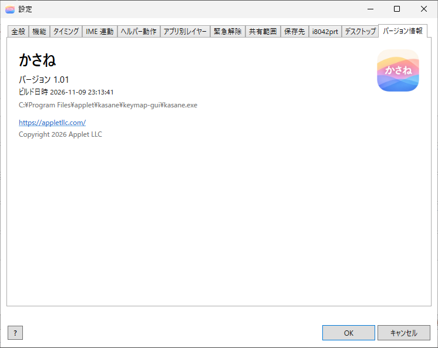